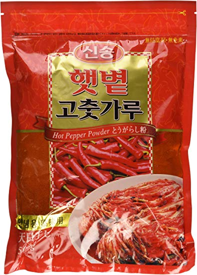
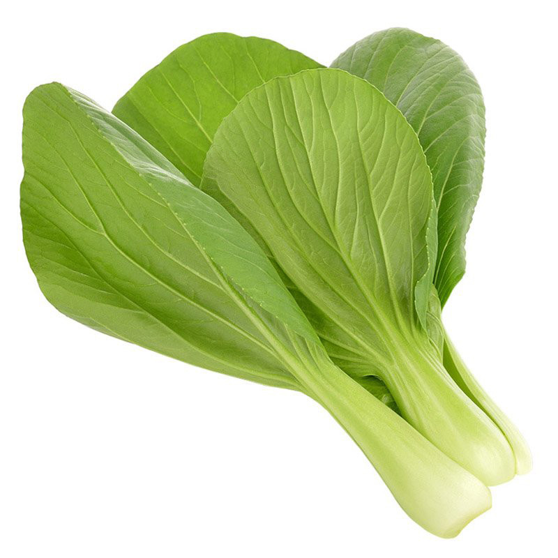
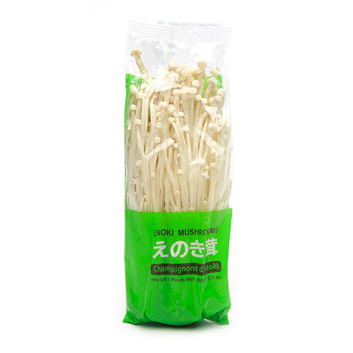

korean hot soup base
this is definitely not the only korean hot soup base, but it's the one we know how to cook ¯\_(ツ)_/¯
- korean hot pepper powder (gochugaru)
- gochujang

- spring onions
- sesame oil

- garlic
- ginger
- ground beef (can be done without but better with)
- wakame seaweed

- clam dashi

- korean sweet potato noodles

- to make the soup base, fry a tablespoon of chilli powder in a mix of vegetable and sesame oil until it becomes a paste (be very careful not to burn it!*). Add chopped spring onions, ginger and garlic, stir, then add the ground beef and some soy. While that's frying, stir in half a tablespoon of gochujang.
- brown the beef, then pour over water, and add the wakame and about a tablespoon of clam dashi. simmer for a few minutes, waiting until you get nice pools of red oil forming on top - this is where the flavour of the soup is.
- add in the sweet potato noodles, and any toppings that you're using in the order they take to cook. you don't need to cook things separately - the soup has plenty of flavour (and oil), so just boiling the ingredients in it works great (they basically fry).
-
good additions:
- pak choi
- soon tofu

- firm tofu

- enokis
- shrimp
- clams
- mussels